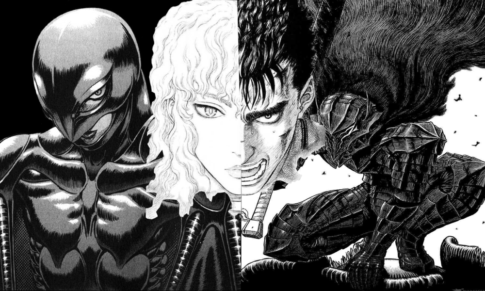
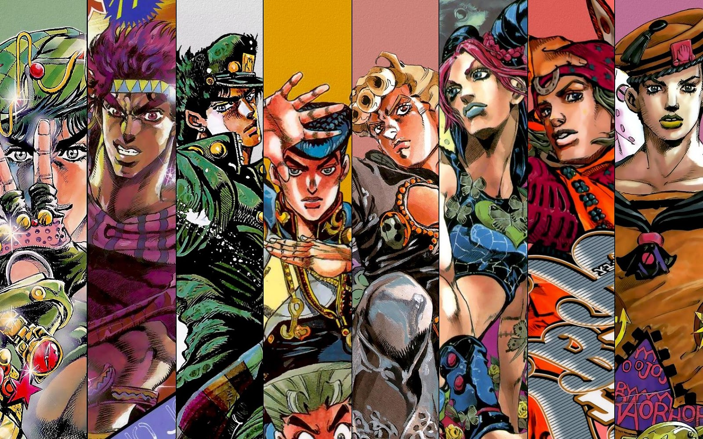
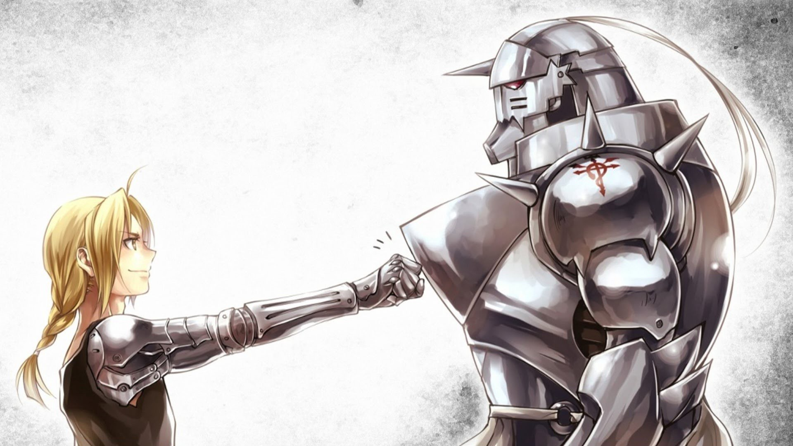

Berserk
Berserk (em japonês: ベルセルク Beruseruku?) é o título de um mangá, que posteriormente foi adaptado como anime, criado em 1988. O tema pretende evidenciar a natureza humana de forma crua e extremada.
Situado em um mundo de fantasia sombria inspirado na Europa medieval, a história gira em torno do solitário Guts, um ex-mercenário e agora um espadachim amaldiçoado e forçado a vagar sem descanso para sobreviver e buscar vingança, e Griffith, o líder de um bando de mercenários chamado de "Bando do Falcão".

JoJo no Kimyou na Bouken
JoJo's Bizarre Adventure foi serializado pela Weekly Shonen Jump desde 1987 até 2004, onde foi transferido para a Ultra Jump, revista mensal com temática em mangás do gênero seinen da mesma editora.
O mangá conta a história da família Joestar e suas lutas contra forças sobrenaturais. Ele é divido em 8 partes e em cada uma há o mais recente primogênito dos Joestar, por via de regra apelidado de JoJo, fadado a seguir as tradições de sua família, "cumprindo com o seu destino" ao participar ativamente em combate a tal presença mística e derivados que assombram a sua família há séculos.

Fullmetal Alchemist
Nada pode ser obtido sem uma espécie de sacrifício. É preciso oferecer em troca alguma coisa de valor igual. Esse é o princípio básico da Alquimia, a Lei da Troca Equivalente. E foi acreditando que essa lei fosse absoluta que os irmãos Edward e Alphonse Elric quebraram o maior tabu entre os alquimistas: realizaram uma transmutação humana para trazer de volta à vida sua mãe. Mas tudo deu errado. No processo, Ed perde a perna esquerda e, para salvar ao menos a alma de seu irmão mais novo, ele sacrifica seu braço direito para fixá-la a uma armadura medieval.
A partir daí a dupla parte em uma jornada em busca da lendária Pedra Filosofal, a qual acredita-se ser capaz de aumentar os poderes de um Alquimista. O plano dos irmãos é usá-la para ter seus poderes ampliados e assim trazerem seus corpos de volta.
Para tanto, Edward se torna um Alquimista Federal. Mas, pouco a pouco, ele e Al vão desvendando os mistérios que envolvem a Pedra Filosofal e toda uma trama conspiratória envolvendo o governo, alquimistas e estranhos seres dotados de incríveis poderes conhecidos como Homúnculos. Todos fazem parte de um mesmo grande círculo de transmutação que tem em seu centro os Irmãos Elric.
